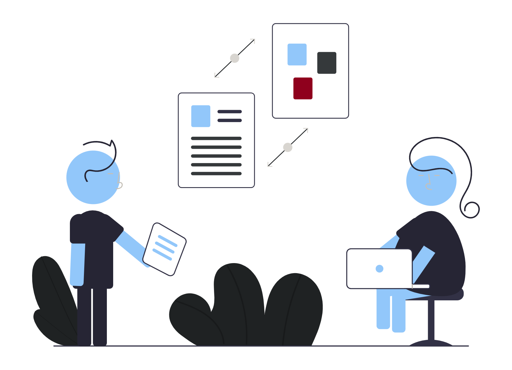
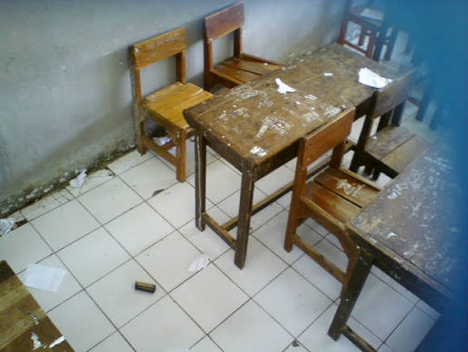

Sampaikan pengaduan, keluhan, dan masukan Anda dengan mudah melalui IDN E-Report. Bersama-sama, kita membangun lingkungan IDN yang lebih nyaman, aman, transparan, dan terus berkembang.
IDN E-Report 2026 Forum Pengaduan merupakan platform digital yang hadir sebagai wadah bagi seluruh warga IDN untuk menyampaikan pengaduan, keluhan, saran, dan aspirasi secara mudah dan terstruktur. Platform ini dibuat untuk mendukung komunikasi yang lebih terbuka antara siswa dan pihak terkait dalam menyampaikan berbagai permasalahan yang terjadi di lingkungan sekolah. Melalui IDN E-Report, setiap laporan dapat menjadi bahan evaluasi dan perhatian untuk menciptakan lingkungan belajar yang lebih aman, nyaman, tertib, dan positif. Kami percaya bahwa kepedulian terhadap lingkungan dimulai dari keberanian untuk menyampaikan apa yang perlu diperbaiki. Dengan semangat kolaborasi dan keterbukaan, IDN E-Report berkomitmen untuk menjadi bagian dari proses menciptakan lingkungan IDN yang terus berkembang dan memberikan pengalaman belajar yang lebih baik bagi seluruh warga sekolah.

IDN E-Report menyediakan beberapa layanan pengaduan yang dapat digunakan untuk menyampaikan berbagai permasalahan, kendala, maupun masukan yang terjadi di lingkungan IDN. Setiap layanan dibuat untuk membantu laporan tersampaikan kepada pihak yang tepat sehingga dapat menjadi bahan evaluasi dan tindak lanjut.
Sampaikan berbagai kendala yang berkaitan dengan kegiatan pembelajaran, jadwal, tugas, proses belajar mengajar, maupun hal lain yang dapat memengaruhi kenyamanan dan kelancaran kegiatan akademik.
Laporkan fasilitas sekolah atau asrama yang mengalami kerusakan, tidak berfungsi dengan baik, kurang terawat, atau membutuhkan perhatian agar dapat segera diketahui dan ditindaklanjuti.
Ingin menyampaikan laporan tanpa mencantumkan identitas? Gunakan layanan pengaduan anonim. Layanan ini memberikan ruang bagi pelapor untuk menyampaikan permasalahan secara lebih nyaman tanpa harus menampilkan identitas kepada publik.
Berikut merupakan beberapa contoh laporan yang disampaikan melalui IDN E-Report. Setiap laporan dapat menjadi informasi dan bahan evaluasi untuk membantu menciptakan lingkungan IDN yang lebih nyaman, aman, dan tertib.
Akademik
Akademik

By: Fattah Yesterday
Kondisi kelas setelah kegiatan belajar membutuhkan perhatian lebih. Beberapa area terlihat kotor dan perlu dibersihkan agar kegiatan belajar tetap nyaman.
SelengkapnyaAkademik
Anonymus
By: Anonymus Yesterday
Saya ingin melaporkan kehilangan dompet yang terakhir saya ingat berada di area kelas. Dompet tersebut berisi kartu pelajar dan beberapa kartu penting lainnya. Saya sudah mencoba mencari di sekitar kelas dan area yang sebelumnya saya kunjungi, tetapi belum menemukannya.
SelengkapnyaAkademik
Akademik
By: Fattah Yesterday
Kondisi kelas setelah kegiatan belajar membutuhkan perhatian lebih. Beberapa area terlihat kotor dan perlu dibersihkan agar kegiatan belajar tetap nyaman.
SelengkapnyaTemukan jawaban atas pertanyaan umum mengenai pengaduan akademik dan fasilitas melalui IDN E-Report.
.accordion-body, though the transition does limit overflow.
.accordion-body, though the transition does limit overflow.
.accordion-body, though the transition does limit overflow.
.accordion-body, though the transition does limit overflow.
.accordion-body, though the transition does limit overflow.
.accordion-body, though the transition does limit overflow.